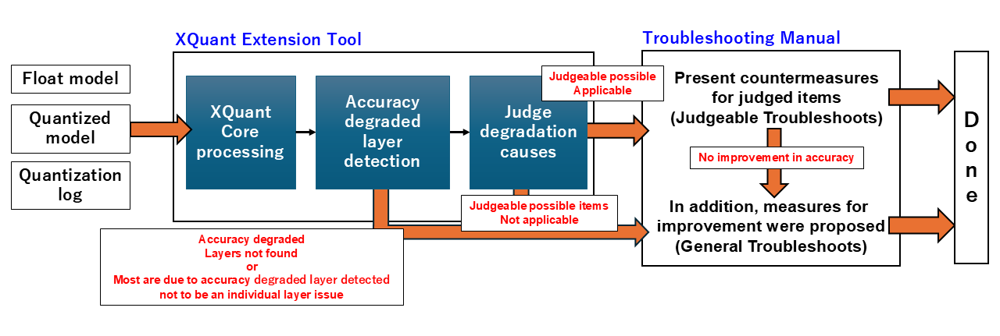

XQuant Extension Tool¶
About XQuant Extension Tool¶
This tool calculates the error for each layer by comparing the float model and quantized model, using both models along with the quantization log. The results are presented in reports. It identifies the causes of the detected errors and recommends appropriate improvement measures for each cause. The following are the main components of the XQuant functional extension tool.
Troubleshooting Manual
A document that outlines judgment methods and countermeasures for accuracy degradation, based on existing troubleshooting documentation.
XQuant Extension Tool
A tool that connects layers identified as having degraded accuracy to the relevant improvement manual and outputs the results.
Overall Process Flow¶
The overall process follows the steps below:
Input the float model, quantized model, and quantization log.
Detect layers in which accuracy has degraded due to quantization.
Judge degradation causes on the detected degraded layers.
Based on the judge results, individual countermeasure procedures or general improvement measures are proposed from the troubleshooting manual.
Additionally, in the cases highlighted in red below, general improvement measures will be suggested instead of specific countermeasures for each item judged.
When no degraded layers can be found
When the majority of layers are identified as degraded and the issue is judged not to be with individual layers
When judging accuracy as degraded and none of the judge items apply
When accuracy does not improve after applying the proposed judgment countermeasures
Please refer to the attached link for the items to be judged in detail.
How to Run¶
When runnnig the tool, replace xquant_report_pytorch_experimental in the code with xquant_report_troubleshoot_pytorch_experimental in the tutorial of XQuant (Explainable Quantization).
from model_compression_toolkit.xquant import xquant_report_troubleshoot_pytorch_experimental
# xquant_report_pytorch_experimental --> xquant_report_troubleshoot_pytorch_experimental
result = xquant_report_troubleshoot_pytorch_experimental(
float_model,
quantized_model,
random_data_gen,
validation_dataset,
xquant_config
)
mct.set_log_folder
mct.ptq.pytorch_post_training_quantization
XQuantConfig
xquant_report_troubleshoot_pytorch_experimental
mct.set_log_folder('./log/dir/path')
quantized_model, quantized_info = mct.ptq.pytorch_post_training_quantization(
in_module=float_model, representative_data_gen=random_data_gen)
xquant_config = XQuantConfig(report_dir='./log_tensorboard_xquant')
from model_compression_toolkit.xquant import xquant_report_troubleshoot_pytorch_experimental
result = xquant_report_troubleshoot_pytorch_experimental(
float_model,
quantized_model,
random_data_gen,
validation_dataset,
xquant_config
)
Note
If log for TensorBoard does not exist, the Unbalanced Concatnation described below will not be executed.
XQuantConfig Format and Examples¶
When running XQuant, the parameters can be set as shown in the table below.
input parameter |
type |
details |
initial value |
|---|---|---|---|
report_dir |
str |
Directory where the results will be saved. [Necessary] |
|
custom_similarity_metrics |
dict[str, Callable] |
User-specified quantization error metric calculation functions. str: metric name, Callable: function to calculate the metric. |
None |
quantize_reported_dir |
str |
Directory where the the quantization log will be saved. If not specified, the path set with mct.set_log_folder will be used. |
Most recently set value in mct.set_log_folder |
threshold_quantize_error |
dict[str, float] |
Threshold values for detecting degradation in accuracy. |
{“mse”:0.1, “cs”:0.1, “sqnr”:0.1} |
is_detect_under_threshold_quantize_error |
dict[str, bool] |
For each threshold specified in threshold_quantize_error, True: detect the layer as degraded when the error is below the threshold.; False: detect the layer as degraded when the error is above the threshold (Not required if custom metrics are not set). |
{“mse”:False, “cs”:True, “sqnr”:True} |
threshold_degration_layer_ratio |
float |
If the number of layers detected as degraded is large, skips the judge degradation causes Specify the ratio here. |
0.5 |
threshold_zscore_outlier_removal |
float |
Used in judge degradation causes (Outlier Removal). Threshold for z_score to detect outliers. |
5.0 |
threshold_ratio_unbalanced_concatnation |
float |
Used in judge degradation causes (unbalanced “concatnation”). Threshold for the multiplier of range width between concatenated layers. |
16.0 |
threshold_bitwidth_mixed_precision _with_model_output_loss_objective |
int |
Used in judge degradation causes (Mixed precision with model output loss objective). Bitwidth of the final layer to judge insufficient bitwidth. |
2 |
You can configure each parameter by calling the XQuantConfig class as shown below.
XQuantConfig(report_dir: str,
custom_similarity_metrics: Dict[str, Callable] = None,
quantize_reported_dir: str = None,
threshold_quantize_error: Dict[str, float] = {"mse": 0.1, "cs": 0.1, "sqnr": 0.1},
is_detect_under_threshold_quantize_error: Dict[str, bool] = {"mse": False, "cs": True, "sqnr": True},
threshold_degrade_layer_ratio: float = 0.5,
threshold_zscore_outlier_removal: float = 5.0,
threshold_ratio_unbalanced_concatenation: float = 16.0,
threshold_bitwidth_mixed_precision_with_model_output_loss_objective: int = 2
):
Understanding the Quantization Error Graph¶
X-axis: Layer names (layers identified as degraded are highlighted in red)
Y-axis: Quantization error
Red dashed line: Threshold for accuracy degradation as set in XQuantConfig
Red circle: Layers judged to have degraded accuracy
Understanding the judgment result¶
Outlier Removal¶
WARNING:Model Compression Toolkit:There are output values that deviate significantly from the average. Refer to the following images and the TroubleShooting Documentation (MCT XQuant Extension Tool) of 'Outlier Removal'.
WARNING:Model Compression Toolkit:./log_tensorboard_xquant/outlier_histgrams/stem_2_conv_kxk_0_conv_bn.png
WARNING:Model Compression Toolkit:./log_tensorboard_xquant/outlier_histgrams/stages_0_blocks_0_token_mixer_mixer_conv_scale_conv_bn.png
WARNING:Model Compression Toolkit:./log_tensorboard_xquant/outlier_histgrams/stages_0_blocks_0_token_mixer_mixer_conv_kxk_0_conv_bn.png
・
・
・
First X-axis(lower part): Indicates bins that finely divide the range of data values.
Second X-axis(upper part): Shows the z-score values corresponding to the primary X-axis.
Red dashed line: The z-score threshold set in XQuantConfig.
Black dashed line
Lower zscore: Indicates the maximum value on the lower side of the histogram.
Upper zscore: Indicates the maximum value on the upper side of the histogram.
core_config = mct.core.CoreConfig(mct.core.QuantizationConfig(z_threshold=3.9))
quantized_model, quantized_info = mct.ptq.pytorch_post_training_quantization(in_module=float_model,
representative_data_gen=random_data_gen,
core_config=core_config)
Shift Negative Activation¶
WARNING:Model Compression Toolkit:There are activations that contain negative values. Refer to the troubleshooting manual of "Shift Negative Activation".
WARNING:Model Compression Toolkit:stem_0_act=GELU
WARNING:Model Compression Toolkit:stem_1_act=GELU
WARNING:Model Compression Toolkit:stem_2_act=GELU
・
・
・
Unbalanced Concatnation¶
WARNING:Model Compression Toolkit:There are unbalanced range layers concatnated. Refer to the troubleshooting manual of 'Unbalanced "concatenation"'.
WARNING:Model Compression Toolkit:first layer:features.15.conv.2, second layer:features.15.conv.3, if you add a scaling operation, recommended scaling:first layer * 5.758747418625537
WARNING:Model Compression Toolkit:first layer:features.16.conv.2, second layer:features.16.conv.3, if you add a scaling operation, recommended scaling:first layer * 6.228137651975462
・
・
・
core_config = mct.core.CoreConfig(mct.core.QuantizationConfig(linear_collapsing=False,
residual_collapsing=False))
quantized_model, _ = mct.ptq.pytorch_post_training_quantization(...,
core_config=core_config)
Mixed Precision with model output loss objective¶
WARNING:Model Compression Toolkit:the quantization bitwidth of the last layer is an extremely small number. Refer to the troubleshooting manual of 'Mixed Precision with model output loss objective'.